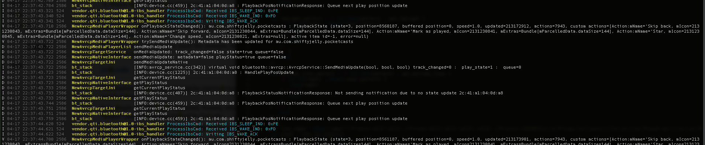

lcat - Colors, filters and annotates adb logcat output. Written in rust.

faceoff - Face landmark visualizer. Created to render face landmarks from dlib frontal face detector. Built using OpenGL immediate mode, stb_easy_font, glfw3.

Screenshot from the SABADO - SmArt BrAnd DetectiOn conference article.

gonet-nural - Small experiment in training a simple Tensorflow model using Python, exporting it and reimplementing it in C with minimal dependencies.

Fibre-wallpaper Android Live Wallpaper - Built using OpenGL ES2.0

Temp-raytracer - Quick raytracer experiment. Built following the Ray Tracing in One Weekend by Peter Shirley book. Written in C++.

Parkinson-ihc - "Serious game" proof of concept game built with Processing and Kinect.

Memoria - Math Android game built with OpenGL ES2.0.

Mouse picking test with OpenGL.

Block based model editor for an old university project. Built with C and immediate mode OpenGL.

Proof-of-concept interface for common android ADB commands used during development. Connects to ADB server through sockets. Built using OpenGL, glfw3, Nuklear, sts_net.

Flappy bird clone built for the Pico8 fantasy console.

Experiments with dynamic loading of .dex files during the runtime of an Android application. Runs UiAutomator code contained in the .dex file.


Assorted OpenGL experiments.